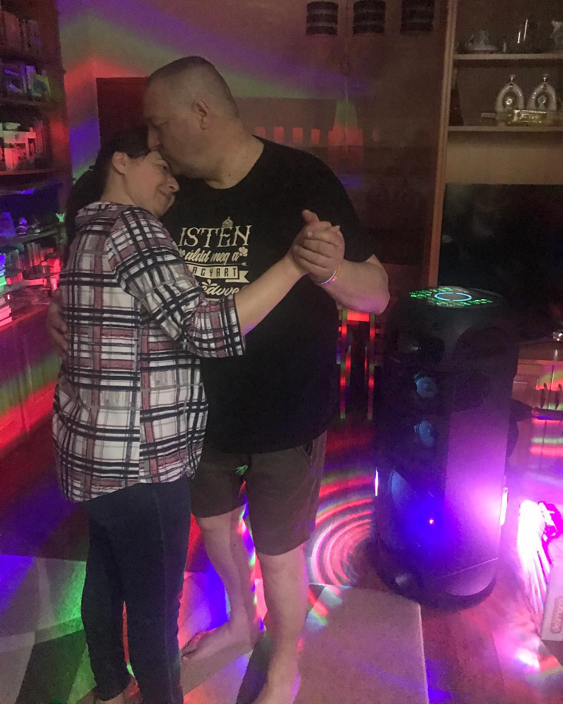
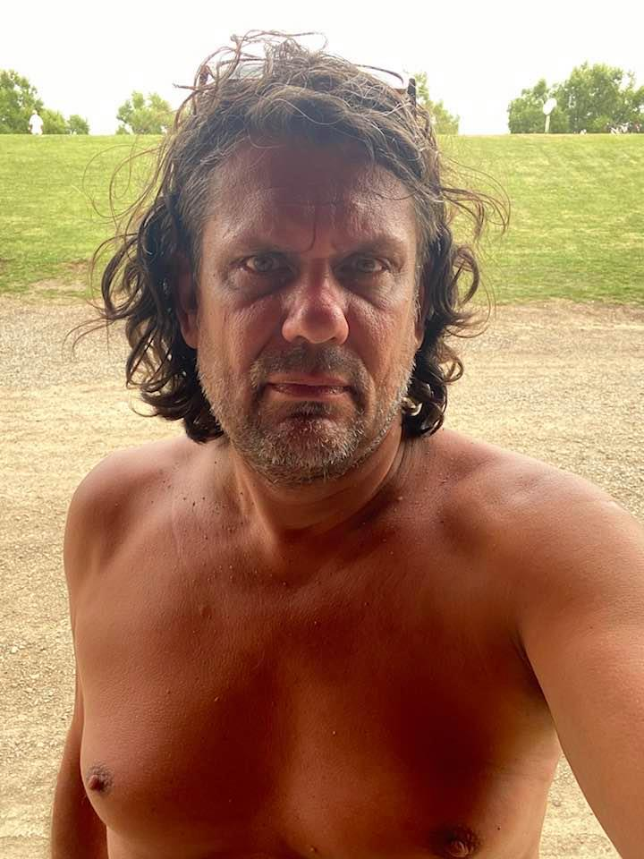

1. I'm Judit Varga and I approve this message
4. Maradjanak otthon!
5. Nyunyóka
Müller Cecília
7. Rossz híreim vannak
8. Körzetük az autopálya, tempójuk halálos
10. Segítség, elütött Hadházy!
11. Wild Boys

13. Orbán Viktort köszöntik
14. Lecserélte profilképét Orbán Viktor
16. Deutsch Tamás szelfizik

18. Novák Előd bátran elszaladt
19. Amerikai elnökválasztás eredményének tálalása a Tényekben
20. Rosszul értelmezett emancipációs küzdelem
21. Ugros eliminandos esse
Pozsonyi Csata
22. SAY IT'S CAROL SINGERS 💀
Bónusz: Ezt ette Németh Szilárd 2020-ban